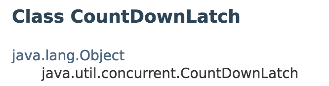
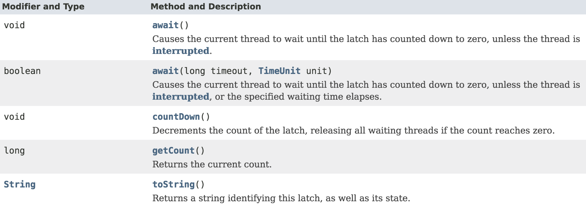

Java多线程进阶（十八）—— J.U.C之synchronizer框架：CountDownLatch
一、CountDownLatch简介
CountDownLatch是一个辅助同步器类，用来作计数使用，它的作用有点类似于生活中的倒数计数器，先设定一个计数初始值，当计数降到0时，将会触发一些事件，如火箭的倒数计时。
初始计数值在构造CountDownLatch对象时传入，每调用一次 countDown() 方法，计数值就会减1。
线程可以调用CountDownLatch的await方法进入阻塞，当计数值降到0时，所有之前调用await阻塞的线程都会释放。
注意：CountDownLatch的初始计数值一旦降到0，无法重置。如果需要重置，可以考虑使用CyclicBarrier。
二、CountDownLatch使用示例
ContDownLatch一般有以下几种用法：
2.1 作为一个开关/入口
将初始计数值为1的 CountDownLatch 作为一个的开关或入口：
在调用 countDown() 的线程打开入口前，所有调用 await 的线程都一直在入口处等待。
public class Driver {
private static final int N = 10;
public static void main() throws InterruptedException {
CountDownLatch switcher = new CountDownLatch(1);
for (int i = 0; i < N; ++i) {
new Thread(new Worker(switcher)).start();
}
doSomething();
switcher.countDown(); // 主线程开启开关
}
public static void doSomething() {
}
}
class Worker implements Runnable {
private final CountDownLatch startSignal;
Worker(CountDownLatch startSignal) {
this.startSignal = startSignal;
}
public void run() {
try {
startSignal.await(); //所有执行线程在此处等待开关开启
doWork();
} catch (InterruptedException ex) {
}
}
void doWork() { ...}
}
2.2 作为一个完成信号
将初始计数值为N的 CountDownLatch作为一个完成信号点：使某个线程在其它N个线程完成某项操作之前一直等待。
public class Driver {
private static final int N = 10;
public static void main() throws InterruptedException {
CountDownLatch compsignal = new CountDownLatch(N);
for (int i = 0; i < N; ++i) {
new Thread(new Worker(compsignal)).start();
}
compsignal.await(); // 主线程等待其它N个线程完成
doSomething();
}
public static void doSomething() {
}
}
class Worker implements Runnable {
private final CountDownLatch compSignal;
Worker(CountDownLatch compSignal) {
this.compSignal = compSignal;
}
public void run() {
try {
doWork();
compSignal.countDown(); //每个线程做完自己的事情后，就将计数器减去1
} catch (InterruptedException ex) {
}
}
void doWork() { ...}
}
三、CountDownLatch类/接口声明
类声明：

构造器：
接口：

四、CountDownLatch原理
关于CountDownLatch的内部实现原理，读者可以参考：
Java多线程进阶（九）—— J.U.C之locks框架：AQS共享功能剖析(4)